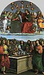
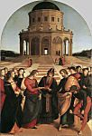
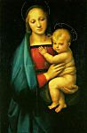
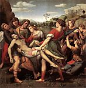

Raffaello
Cliccare sulle immagini per ingrandirle
1 
2 
3 
4 
5 
6 
7 
8 
9 
10 
11 
12 
13 
14 
15 
16 
17 
18 
19 
Raffaello Sanzio, o Santi, detto Raffaello
(Urbino 1483 - Roma 1520)

Introduzione
Il percorso dell'artista in Italia centrale giustifica la divisione tradizionale della sua carriera, gloriosa per la pittura, in tre periodi di importanza crescente: il periodo marchigiano e umbro (1500-1504), il periodo fiorentino (1504-1508) e il periodo romano (dopo il 1508).
Le Marche e l'Umbria
A Urbino, Raffaello fu iniziato all'arte dal padre, Giovanni Santi, ma apprese senz'altro molto anche dal contatto con la raffinata corte ducale. Quindi perfezionò i suoi studi a Perugia, presso il Perugino, che seppe comunicargli il senso dell'ampiezza che egli stesso aveva appreso da Piero della Francesca. Le opere prodotte da Raffaello in questo periodo - dal 1500 circa al 1504 - riflettono lo stile del Perugino, talvolta anche quello del Pinturicchio (1454-1513), non senza lasciare intuire un accento più umano e un gusto della semplicità che non contraddice la raffinatezza dell'esecuzione. La pala della chiesa di San Francesco al Monte di Perugia (1502-1503, Pinacoteca Vaticana) rende l'Incoronazione della Vergine (1) il soggetto di una composizione in due fasi, nella quale la varietà degli atteggiamenti e delle espressioni testimonia una ricerca personale. Dipinto nel 1504 per San Francesco di Città di Castello, Lo Sposalizio della Vergine (2) (Pinacoteca di Brera, Milano) riprende con maggiore grazia la dimostrazione della geometria spaziale che il Perugino aveva mostrato nella Consegna delle chiavi della cappella Sistina.
Firenze
Dopo il trasferimento a Firenze - ove sarebbe rimasto per 4 anni - il giovane maestro provinciale scoprì nuovi orizzonti. Non poteva ignorare né la tradizione del quattrocento, né la presenza contemporanea di Leonardo da Vinci e di Michelangelo. Le composizioni monumentali di Fra Bartolomeo (1472-1517) contribuirono ad ampliare il campo delle sue esperienze. La sua produzione di quel periodo risente di tutte queste diverse correnti, ma l'umanità sempre più profonda che rappresenta è frutto di una visione già molto personale.
La cultura fiorentina impregna alcuni piccoli dipinti molto raffinati: San Michele, San Giorgio (museo del Louvre); San Giorgio (National Gallery, Washington); il dittico composto da il Sogno del cavaliere (National Gallery, Londra) e le Tre grazie (3) (museo Condé, Chantilly). Ma Raffaello, a Firenze, si consacra soprattutto ad alcune variazioni sul tema della Madonna, ponendo un accento inimitabile sulla sua femminilità e tenerezza. A volte sola con il Bambino, la Vergine è accompagnata da altri personaggi, spesso collocati in un paesaggio di tradizione umbra, luminoso e sereno. Le più celebri madonne fiorentine di Raffaello sono quelle dette del gran duca (4) (palazzo Pitti, Firenze) e della casa d'Orléans (museo Condé), la Vergine del prato (5) (Kunsthistorisches Museum, Vienna), con il gruppo piramidale ispirato alla Sant'Anna di Leonardo, come nella Madonna del cardellino (6) (galleria degli Uffizi, Firenze) o la Belle Jardiniére (Louvre). Il tema è anche al centro delle composizioni più ambiziose, ma chiaramente articolate, che lo amplificano in "conversazione sacra": la pala "Colonna" (Metropolitan Museum, New York), la pala "Ansidei" (National Gallery, Londra), la Madonna del baldacchino (palazzo Pitti). Il Trasporto di Cristo al sepolcro (7) (galleria Borghese, Roma) è il soggetto principale della pala "Baglioni", dipinta nel 1507 per San Francesco di Perugina; vi troviamo, eccezionalmente, uno stile teso, con una ricerca plastica ispirata da Michelangelo. La Gloria della Trinità, affresco dipinto a San Severo di Perugia, invece, ha un'ampiezza tranquilla che annuncia il Trionfo dell'eucarestia. Al periodo fiorentino appartengono infine dei bei ritratti, nei quali l'influenza di Leonardo è manifesta: la Donna gravida (palazzo Pitti), Agnolo Doni (8) e Maddalena Doni (palazzo Pitti), con un paesaggio sullo sfondo, come la Dama del liocorno (9) (galleria Borghese).
Roma: le commissioni papali
Arrivato a Roma nel 1508, Raffaello vi avrebbe trovato il terreno favorevole per lo sviluppo completo della propria genialità. Esaltato dalla rivelazione dell'antichità, così come dall'esempio di Bramante e di Michelangelo, apparve ben presto come l'artista più capace di tradurre i grandi disegni dei papi umanisti del Rinascimento in una lingua di portata universale; inizialmente fu Giulio II che sognò di risuscitare la Roma imperiale sotto il dominio spirituale, temporale e culturale della Chiesa.
Nel palazzo del Vaticano, una squadra di pittori senesi ed umbri aveva appena iniziato la decorazione dell'appartamento situato al di sotto di quello di Alessandro VI Borgia. Nel 1508 Giulio II decise di farli sostituire da Raffaello, che Bramante aveva presentato alla corte pontificia. Così, sotto il nome delle stanze del Vaticano, prese forma il più celebre ciclo di affreschi mai realizzato dall'artista - e, in larga misura, dalla sua bottega.
La stanza detta "della Segnatura" fu dipinta tra il 1509 e il 1511, quasi interamente per mano di Raffaello. Questo insieme, in cui la sua arte raggiunge il punto d'equilibrio e obbedisce a un'ispirazione particolarmente elevata, dà forma a un grande progetto dell'umanesimo: la riconciliazione tra cultura pagana e ideale cristiano. Tra alcune grottesche già eseguite dal Sodoma (1477-1549), i quattro medaglioni della volta contengono le figure allegoriche della Teologia, delle Filosofia, della Poesia e della Giustizia, alle quali si riferiscono i soggetti dei cassettoni adiacenti: il Peccato originale, l'Astronomia, Apollo e Marsia, il Giudizio di Salomone. Il tema quadripartito è sviluppato dai grandi affreschi centinati delle pareti, nei quali l'allegoria cede il passo a rappresentazioni viventi. Illustrando la Teologia, il Trionfo dell'eucarestia (10) (celebre sotto il nome poco preciso di "Disputa del santo sacramento") sovrappone magistralmente una zona terrestre, quella della Chiesa militante (dottori, papi e fedeli), e una zona celeste, quella della Chiesa trionfante (profeti, apostoli e santi), in uno spazio incurvato in cui tutto converge verso l'ostensorio centrale. La Filosofia è celebrata dalla Scuola d'Atene, nella quale le figure di filosofi e sapienti popolano la prospettiva maestosa di un tempio ispirato da Bramante. Per la Poesia, è la composizione meno chiara del Parnasso, in cui i poeti antichi e moderni accompagnano Apollo e le Muse; per la Giustizia, infine, abbiamo due scene: Gregorio IX che promulga i Decretali e Triboniano che consegna le Pandette a Giustiniano, separate da una finestra e sormontate da una rappresentazione allegorica delle Virtù.
Dipinto tra il 1511 e il 1514, la stanza detta "di Eliodoro" denota un'evoluzione rispetto alla precedente. Meno ideale e più storica, addirittura con allusioni alla politica papale, il tema delle pareti (i medaglioni della volta, invece, offrono quattro episodi dell'Antico Testamento) è quello dell'intervento divino a favore della Chiesa. D'altra parte, il registro dei mezzi pittorici si è ampliato: con la scena di Eliodoro cacciato dal Tempio (11) (in cui si nota la presenza significativa di Giulio II), è il movimento che entra in gioco; con la Liberazione di San Pietro, invece, abbiamo il chiaroscuro in una versione notturna; con la Messa di Bolsena, il realismo testimoniato dai ritratti dei dignitari della corte pontificia e il colore, trattato più generosamente, senza dubbio sotto l'influenza veneziana; con l'Incontro di San Leone con Attila (in cui Leone X appare sotto i tatti del santo), una nuova formula di composizione, mediante masse disuguali.
Già cospicua nella stanza di Eliodoro, la parte degli aiuti di Raffaello diventa importante nella stanza detta "dell'incendio di Borgo", dipinta per Leone X tra il 1514 e il 1517, secondo un tema in cui la storia e l'attualità hanno un ruolo ancora più grande. Le quattro scene principali rappresentano le opere dei papi di nome "Leone". Ciò che giustifica la denominazione della stanza, Leone IV che arresta l'incendio di Borgo con un segno della croce (12), è la più notevole, con la sua composizione tridimensionale, la passione archeologica che testimonia, la qualità plastica dei suoi brani, in cui apparirebbe anche la mano di Raffaello.
Nella stanza detta "di Costantino", è soltanto la concezione dell'insieme che sembra spettare al maestro; l'esecuzione è interamente dovuta ai suoi allievi, come Giulio Romano, al quale è attribuito l'affresco tumultuoso e grandioso rappresentante la Battaglia del ponte Milvio (o Vittoria di Costantino su Massenzio).
È sicuramente nel 1514 che Leone X aveva commissionato a Raffaello un altro insieme importantissimo: i cartoni per i dieci arazzi degli Atti degli apostoli, destinati alla cappella Sistina. Tessuti a Bruxelles, gli arazzi originali sono esposti alla Pinacoteca vaticana. Ci sono pervenuti sette dei cartoni (Victoria and Albert Museum, Londra): queste grandi composizioni, specialmente la Pesca miracolosa, che sembra autografa, sono preziose per la semplicità classica e l'efficacia di una messa in scena che fornisce il ruolo essenziale ai personaggi.
Dal 1518 fino alla su morte, Raffaello dirigerà il cantiere delle "logge" del Vaticano. è una galleria di tredici arcate, la cui decorazione delicata e fastosa, eseguita per lo più da Giovanni da Udine (1487-1564), associa delle grottesche dipinte e degli stucchi modellati, lasciando posto anche a piccole composizioni a fresco, nel numero di quattro per arcata, che illustrano in modo conciso e vivente i principali episodi dell'Antico Testamento. Questa celebre "Bibbia" è un'invenzione del maestro, e si conoscono parecchi disegni che ad essa fanno riferimento; ma l'esecuzione spetta a Giulio Romano, Polidoro da Caravaggio (1500-1546), Perin del Vaga (ca. 1501-1547), Giovanfrancesco Penni (1488 - ca. 1530), ecc..
Roma: Roma: altri lavori
I cantieri del Vaticano non assorbirono la stessa prodigiosa energia che Raffaello ebbe nell'affrescare molti edifici romani. Quello che rappresenta Isaia tra due putti, nella chiesa di Sant'Agostino (1511), richiama molto da vicino i profeti di Michelangelo. Le commissioni del banchiere Agostino Chigi meritano un'attenzione particolare. Al piano terra della sua villa, denominata più tardi "la Farnesina", Raffaello dipinse nel 1511 il Trionfo di Galatea (13), composizione morbida e imbevuta di un umanesimo delicato. È ancora il sentimento plastico di Michelangelo che ispira le quattro sibille, gli angeli e i putti che sormontano un arco di Santa Maria della Pace (1514). A Santa Maria del Popolo, la cappella Chigi, la cui architettura è dovuta a Raffaello, sono presenti dei mosaici eseguiti in base a suoi disegni (1516). Infine, nel 1517, il maestro ricevette l'incarico di decorare a fresco la loggia di villa Chigi. Nonostante l'esecuzione, a lui spetta l'invenzione, molto originale, come testimoniato dai bei disegni. La sala imita una pergola con dei festoni di fiori e frutti; la favole di Psiche occupa il centro della volta e le sue dieci linee d'imposta.
Il seguito delle madonne romane continua quello del periodo fiorentino, in uno stile più maturo e spesso più grave. La madonna detta del Duca d'Alba (14) (National Gallery, Washington) è un tondo, così come la celebre Madonna della seggiola (palazzo Pitti). La Madonna del diadema (Louvre) è di piccolo formato, mentre la Madonna di Foligno presenta un'ampia composizione (Pinacoteca vaticana), la Madonna del pesce (museo del Prado, Madrid) e la Madonna di Sistina (Gemäldegalerie, Dresde); quest'ultima, che proviene da San Sisto di Piacenza, nella sua sobrietà, è la più mistica. Al periodo romano appartengono anche altri dipinti di carattere religioso: la Visione di Ezechiele (palazzo Pitti), di effetto monumentale, nonostante il piccolo formato; la Santa Cecilia (pinacoteca di Bologna), con la sua natura morta di strumenti musicali; infine, la celebre Trasfigurazione (16) (Pinacoteca vaticana), in due registri, la cui parte inferiore rivela l'intervento degli allievi.
Il lavoro sfibrante di Raffaello non gli impedisce di dipingere, a Roma, alcuni ritratti la cui raffinatezza è pari alla semplicità: il Cardinale (Prado, Madrid), Baldassare Castiglione (17) (Louvre), Fedra Inghirami (palazzo Pitti), la Donna velata (palazzo Pitti), il presunto Bindo Altoviti (National Gallery, Washington), Leone X con due cardinali (18) (Uffizi).
L'universo di Raffaello
Ciò che l'opera del maestro rivela, innanzitutto, nel corso dei suoi tre periodi, spiegando anche più facilmente l'estensione del suo successo, è la sua prodigiosa facoltà di tradurre concetti molto elevati in un linguaggio naturale e accessibile a tutti, in un modo di forme attraversate da uno spirito profondamente umano. L'esempio delle Madonne è di per sé significativo. Possiamo porre l'accento sulla maternità felice (la Belle Jardinière, la Vergine della seggiola) oppure sulla gravità della missione (Madonna sistina); ciò che abbiamo sotto gli occhi, in qualsiasi caso, è l'immagine di una femminilità che unisce in modo sottile grazia e nobiltà. Ma i grandi cicli romani hanno permesso a Raffaello di provare la sua invenzione nel modo più completo. Certamente non possiamo rendergli onore per l'interezza di un programma come quello della stanza della Segnatura, in cui l'umanesimo assume una risonanza neoplatonica. Qui il pensiero papale ha la sua parte, ma l'interpretazione di Raffaello ci fa capire tutto ciò che si è voluto lasciar capire. La vocazione dell'artista non era quella di tracciare figure allegoriche - tuttavia presenti per fissare il tema -, ma di svilupparne il significato in scene che raccontano un'avventura dello spirito umano. La composizione gioca evidentemente un ruolo primordiale. Esprime di per sé l'idea di un ordine spirituale, mediante l'equilibrio delle masse, mediante l'equilibrio finale delle forze che mette in gioco, mediante il posto che assegna a ogni cosa, ma anche mediante la morbidezza delle sue linee determinanti. Respira in modo proporzionato ad uno spazio che amplifica la prospettiva, in cui la disposizione è più importante delle stesse figure. Tutto ciò è il segno di un temperamento classico, ma il genio di Raffaello è abbastanza ricco da ammettere anche tendenze apparentemente contrarie. La stanza di Eliodoro ne è la prova, con l'interesse che vi si manifesta per il movimento, per l'illuminazione notturna, in altri termini per l'accidentale e per la verità individuale espressa con tanta penetrazione dagli ammirevoli ritratti dipinti a Firenze o a Roma.
La mano di Raffaello
È opportuno guardarsi da un errore molto diffuso, che consiste nel credere che il merito di Raffaello risieda nella concezione, e forse nella composizione, ma non tanto nell'esecuzione, riconducendola, come voleva Bernard Berenson, a quella di un geniale "illustratore". Raffaello è anche un grandissimo pittore. È pur vero che una specie di pudore lo portò a dissimulare sempre i suoi mezzi e la sua scienza sotto un'apparenza di semplicità, addirittura d'ingenuità. Ed è anche vero che ebbe il ruolo di capomastro, che l'estensione del suo lavoro lo obbligò spesso ad affidare, parzialmente o interamente, l'esecuzione delle commissioni ai suoi allievi o collaboratori e, infine, che non è facile determinare il grado d'importanza esatto di queste invenzioni. Siamo portati, perciò, a giudicare come autografe un certo numero di opere di qualità superiore. Qualità del disegno, attestato anche dai numerosi studi preparatori del maestro, conservati nelle collezioni internazionali, e che consentono di apprezzare tutta la sensibilità dei profili nati da un gioco di curve. Qualità del colore, generalmente discreto e accessorio alla forma, a volte più ricco, come si può osservare nella Messa di Bolsena (19). Qualità esecutiva, leggera e vibrante nei casi migliori, ma con una virtuosità che non si mette in mostra di buon grado.
Il pittore e la sua posterità
Le incisioni di Marcantonio Raimondi (1480-1534), contemporaneo di Raffaello, hanno contribuito alla popolarità della sua opera. La diffusione dello stile è dovuta ai suoi numerosi aiutanti e discepoli, tra i quali Giulio Romano sembra essere stato il più intimo. È vero che l'utilizzo del linguaggio del loro maestro è sfociato molto spesso nel manierismo. Il vero erede di Raffaello sarà un pittore francese del XVII secolo. Il sudore.
Per molto tempo, spesso abusivamente, l'opera di Raffaello è stata considerata come una specie di manifesto del classicismo. Questo potrebbe essere il motivo principale della disistima che incontra dalla metà dell'ultimo secolo, e che esprimeva specialmente la rivolta dei preraffaelliti. Ancora ai nostri giorni, le qualità di Raffaello non sono tali da poter soddisfare un gusto che è sempre alla ricerca dell'imprevisto e dell'incompiuto. Uno sguardo attento permette tuttavia di distinguere, sotto l'apparenza della semplicità, la freschezza e l'eminenza del suo messaggio.
Raffaello architetto
Le opere architettoniche di Raffaello meritano un posto tra quelle che hanno contribuito a definire lo spirito del Rinascimento classico. L'essenziale è a Roma. La chiesa di Sant'Eligio degli Orefeci risale a circa il 1513. Nel 1514 Raffaello fu nominato, da Bramante, direttore dei cantieri della basilica vaticana; adottò un progetto che abbandona la croce greca per la croce latina, ma che non fu eseguito in quanto tale. In compenso si ispirò al progetto del Bramante per San Pietro, costruendo, verso il 1515, la cappella Chigi a Santa Maria del Popolo. La loggia di villa Madama, risalente al 1516 circa, è apprezzabile per la sua volta con decorazioni in stucco.

© 2006 Umanista.Net